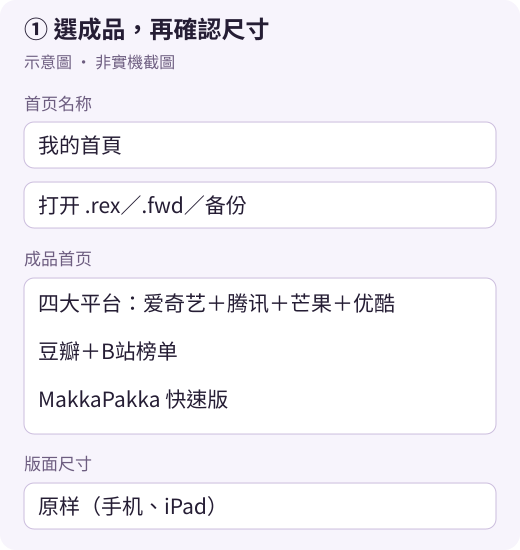
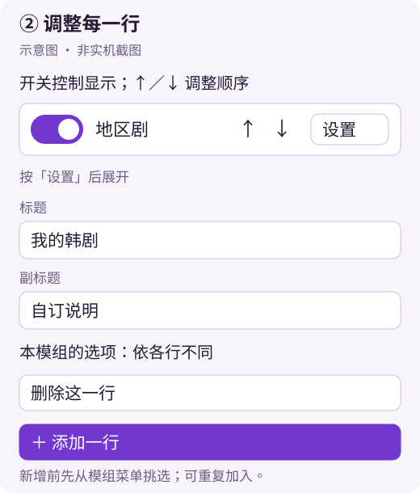
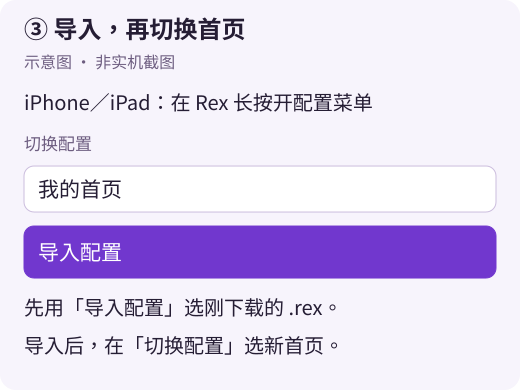
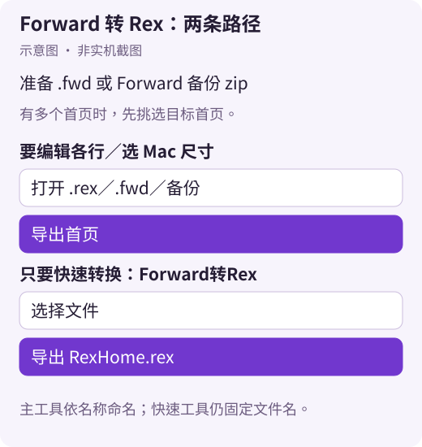

Rex 首頁匯出與匯入
2026-10-31 更新 · 對應工具 2026.10.30 · 作者：Bolinxxlin
先選現成首頁，或打開自己的首頁／備份；調整後匯出 首頁名稱.rex，再用 Rex 匯入。iPhone、iPad、Mac 都能使用網頁工具。Forward 的 .fwd 與備份也能直接轉成 Rex 首頁。
正文用繁體中文；「」內保留工具介面原文。圖均為示意圖，App 選單可能隨版本不同。
開啟 Rex 首頁匯出工具① 沒有檔案？先選成品首頁
- 打開上方工具，找到「成品首页」選單。
- 點選下列任一項；載入會替換目前編輯內容，要保留舊版本請先匯出。
- 等名稱與各行更新，再往下編輯。選單會回到「选一个直接载入……」，這是正常的。

載入需要網路。出現「载入不了成品」時，先檢查網路；也可到 platform-home 分支下載 PlatformHome.rex、DoubanBilibili.rex 或 MakkaFast.rex，再用「打开 .rex／.fwd／备份」讀取。
② 打開自己的首頁或備份
iPhone／iPad：從 Rex 備份取出
- 在 Rex 設定進入「iCloud」，找到備份區域，按「导出本机备份」。此路徑依倉庫既有說明，未經本輪 App 實機確認。
- 在系統分享選單儲存到「檔案」，記下位置，例如 iCloud Drive 或「我的 iPhone」。不必安裝 ES 檔案瀏覽器。
- 回網頁工具，按「打开 .rex／.fwd／备份」選剛存的備份 zip，不用解壓。
- 若出現多首頁選單，選要匯出的首頁，核對名稱、行數與行名。名稱讀不到時，手動填「首页名称」。
已經有檔案
- Mac 匯出或朋友分享的
.rex：同一開啟按鈕選檔，電腦也可直接拖進網頁。 - Forward 的
.fwd／備份 zip：同一按鈕直接開啟，詳細步驟見第 ⑦ 段。
進階：只有個別首頁 JSON
從 Rex 備份的 payload → homes → configs 選不含 .sync 的首頁 .json。.sync.json 是同步記號；不要只看檔案大小或選「最新修改」的檔案，因為可能包含已刪首頁的舊檔。
優先開完整備份 zip，讓工具列出首頁；工具不支援 .rar、.7z。不要把整份備份寄給別人，備份內含帳號等個人資料。
③ 編輯名稱、順序與各行
- 「首页名称」填入如「我的首頁」。按「换头像」選圖，會裁成 333×333 PNG；「用默认头像」移除自訂圖。
- 每行開關控制顯示；按「↑／↓」上下移動。
- 按「设置」修改「标题」、「副标题」與該模組提供的地區、類型等選項，完成按「收起」。
- 底部選擇模組後按「＋ 添加一行」。同一模組可加入多次，例如日本與韓國各一行。
- 要移除行，在該行「设置」內按「删除这一行」。

標示「其他模块」的行保留來源設定，可調整標題、副標題、開關、順序；不能在此編輯資料參數。Rex 內仍要具備所用的模組與必要設定。
「一键重置」回工具初始首頁；「空白模板」從官方輪播開始；「预设配置」是 Rex 預設的 14 行。三者都會替換目前內容，剛按完可立即點訊息中的「撤销」。一般編輯、刪除與載入成品沒有通用的復原鍵，請先匯出留底。
④ 選版面尺寸，再匯出
在「版面尺寸」選適合的選項，再按「导出首页」。以下以「首页名称」填「我的首頁」為例：
| 介面選項原文 | 下載檔名 |
|---|---|
| 原样（手机、iPad） | 我的首頁.rex |
| Mac 中尺寸（全宽行放大） | 我的首頁-Mac.rex |
主工具不再固定輸出 RexHome.rex。不合法的檔名字元會移除，清理後空白才用 RexHome 當後備名稱。Mac 也可選「原样」保留來源尺寸。
「原样」不會把 Mac 首頁縮回手機尺寸；Mac 中尺寸會加高支援的全寬格子，避免對已加高的檔案重複套用。一般首頁至少開一行，否則會顯示「至少要开启一行。」
⑤ iPhone／iPad 匯入
- 在 Safari 下載項目或「檔案」找到剛匯出的
.rex；朋友收到檔案，也先儲存到「檔案」。 - 點檔案並選 Rex 開啟；若沒有 Rex 選項，改到 Rex 長按打開配置選單 →「导入配置」，挑選該檔案。
- 在「切换配置」確認並選新首頁，檢查名稱、行順序及相關模組。

GitHub Pages 正常會下載 .rex。只有特殊嵌入環境存成 .zip 時，才把工具匯出的首頁包副檔名改成 .rex，避免留下 .rex.zip。不要改整份備份 zip，也不要靠改副檔名轉換 .fwd。
⑥ Mac 匯出與匯入
- 用瀏覽器開相同工具；選成品首頁，或開啟／拖入自己的
.rex、.fwd、備份 zip。 - 有多個首頁就先挑選；編輯後可選「Mac 中尺寸（全宽行放大）」。
- 按「导出首页」，到瀏覽器設定的下載位置（通常是「下載項目」）找到
首頁名稱-Mac.rex；選原樣則沒有-Mac。 - 用 Rex 的「导入配置」選檔，再切換新首頁。
Mac 的「导入配置」確切位置尚未經本輪實機確認，不指定左側欄或選單位置。倉庫既有說明指出 Mac Rex 可直接匯出首頁；本教學示範的是網頁工具流程。
⑦ Forward .fwd／備份轉成 Rex
準備 Forward 匯出的 .fwd，或 Forward 設定匯出的備份 zip；備份不用解壓。App 匯出備份選單的確切位置未經本輪實機確認。

A．要編輯各行、選尺寸：用主工具
- 開 Rex 首頁匯出工具 →「打开 .rex／.fwd／备份」選檔。
- 備份有多個首頁時，在出現的首頁選單挑選；確認名稱、行數與行名。
- 名稱、頭像與各行讀入後，依第 ③ 段編輯，再選尺寸。
- 按「导出首页」，得到
首頁名稱.rex或首頁名稱-Mac.rex，依第 ⑤／⑥ 段匯入。
B．只需快速轉換：用獨立工具
- 開 Forward转Rex →「选择档案」。
- 選
.fwd或 Forward 備份 zip；有多個首頁時選「备份里的首页」。 - 核對首頁及行數，可修改「首页名称」。
- 按「导出 RexHome.rex」，再用 Rex 匯入。
兩個工具檔名不同：主編輯器依首頁名稱命名；獨立「Forward转Rex」目前仍固定輸出 RexHome.rex，即使修改「首页名称」也一樣。獨立工具沒有各行編輯或尺寸選單。
要保留 Forward 格式？
使用 Forward 官方匯出工具 ↗ 產生供 Forward 使用的 .fwd。本頁兩個 Rex 工具都輸出 .rex，不輸出 .fwd；不必先經官方工具，才能讀取既有的 Forward 備份。
轉換首頁不會替你登入或移轉資源庫帳號，也不代表各行播放可用。第三方模組及必要參數仍需在 Rex 內設定。不要分享整份備份；分享首頁包前，也請檢查第三方行是否有個人網址或參數。
驗證範圍與常見問題
功能核對依據：main 22e1e8e 的主工具及獨立轉換工具。靜態與程式層級檢查、瀏覽器受阻情形另列於 PR。
- 本輪未完成：iPhone、iPad、Mac 的 Rex／Forward App 實機匯入、播放，以及 Forward 官方匯出工具操作。示意圖不是實測截圖，舊版測試不作為新版通過證據。
- 下載後找不到：查看瀏覽器下載清單與設定的位置，按首頁名稱找檔案。
- 匯入後缺行或空白：確認匯入及切換的是目標首頁、行已開啟，並檢查 Rex 內的模組與必要設定。
- 讀取失敗：檢查副檔名、是否拿到備份而非首頁包，以及畫面錯誤訊息；工具不讀 RAR／7z。
- 本機處理與網路：備份及首頁在瀏覽器本機處理，不上傳；載入成品、JSZip 及備份讀取所需的 sql.js 程式庫仍可能需要網路。